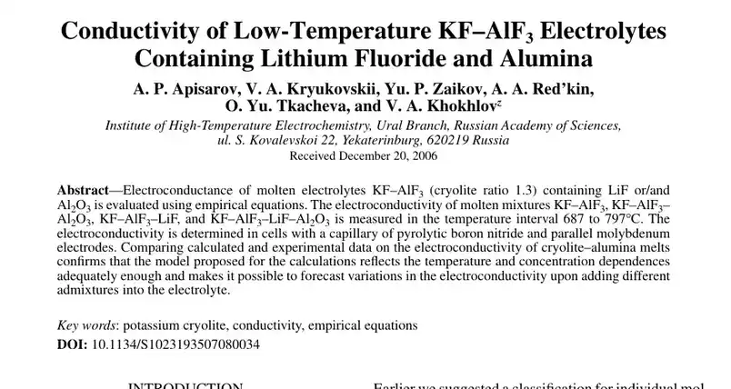
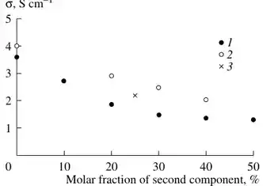
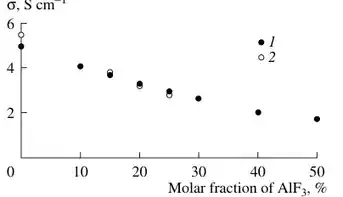
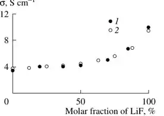
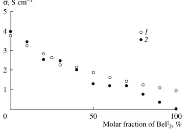
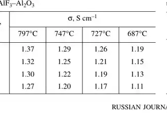
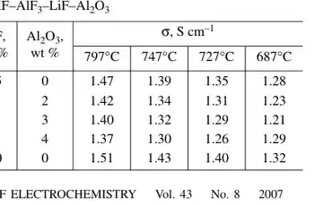
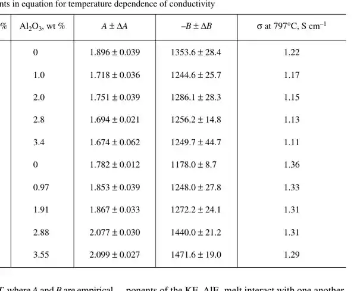
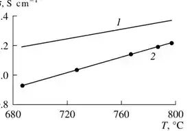
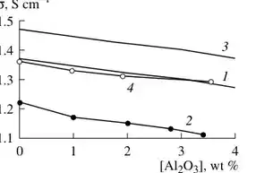

ConductivityOfLowTemperatureKF_ALF3ElectrolytesContainingLiF_Al2O3
Automatically extracted visual regions. Page numbers refer to source PDF; crops may include tables, equations or text. Not numeric curve digitization.

PDF page 1, visual region 1
PDF page 2, visual region 1
PDF page 2, visual region 2
PDF page 3, visual region 1
PDF page 3, visual region 2
PDF page 3, visual region 3
PDF page 3, visual region 4
PDF page 4, visual region 1
PDF page 4, visual region 2
PDF page 4, visual region 3